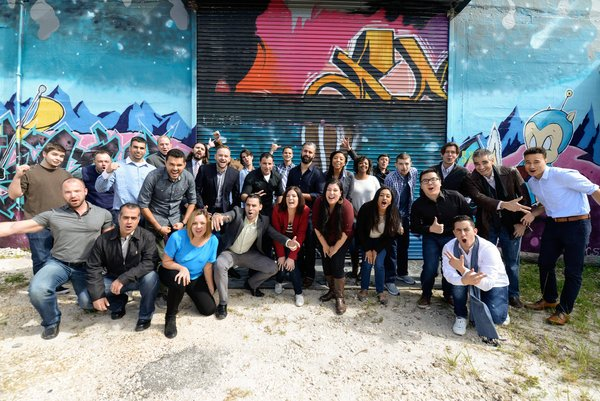

Robert Anderson
Hi there!
Thanks for checking out my portfolio!
Here you can see some of the software that I have created,
and links to the actual code.
But first, I wanted to tell you a little about myself.
I started my career in Biochemistry,
Studying the secrets of the molecular world.
I knew I wanted to do something important, and use my knowledge to help the world.
So I dove into the world of plant biology,
Taking part in biofuels research.
Although I learned a lot, something felt missing..
I knew I wanted to build things, change things.
I had little experiences with coding, here and there,
And every time I built something with code, I liked it.
After I graduated from school I took a job with the local Health Department, testing ocean and swimming pool water to make sure people don't get sick.
It wasn't glamorous work, but I felt good about protecting people.
And.. I kept coding
After taking some classes and completing some projects, I knew I wanted to code full time.
It was kind of scary, but I left my job and joined a 9 week coding bootcamp.

Now, the journey continues
I love programming because I get to solve puzzles and build things. And, the things that I make can actually help people.
Wanna see what I've made?